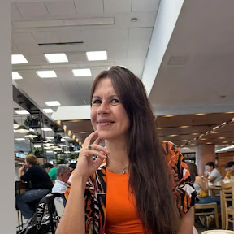

Hay momentos en los que dejamos de conectar con nosotros mismos.
Vivimos en piloto automático. Cumplimos con nuestras responsabilidades, pero sentimos que algo dejó de tener sentido. AMAY nace para acompañarte en ese camino de reencuentro.
Tal vez te está pasando esto...
Te levantás cada día y cumplís con todo lo que tenés que hacer. Pero hace tiempo que dejaste de preguntarte qué necesitás vos.
Vivís en piloto automático. Las responsabilidades ocupan cada vez más espacio. Los días pasan rápido.
Y, sin darte cuenta, comenzaste a sobrevivir en lugar de vivir.
Por eso nació AMAY.
Creemos que toda transformación comienza cuando nos animamos a mirar aquello que ya no podemos seguir ignorando.
AMAY es un ecosistema de desarrollo humano que acompaña a personas, instituciones educativas y organizaciones a reconectar con su propósito, desarrollar su potencial y volver a sentirse vivas.
Creemos en procesos de acompañamiento que respetan los tiempos, la historia y el camino de cada persona y organización.
Diseñamos las condiciones para que las personas adopten los comportamientos que la organización necesita.
Un mismo propósito. Tres caminos.
Cada persona, cada docente y cada organización atraviesa desafíos diferentes. En AMAY diseñamos tres caminos de acompañamiento, con un mismo propósito: volver a sentirte vivo.

Quién está detrás de AMAY
Mi nombre es Alejandra Vera Naharro, creadora de AMAY. Mi recorrido comenzó en la informática y, con los años, encontré mi propósito acompañando procesos de aprendizaje, desarrollo humano y transformación organizacional.
Desde hace más de 15 años acompaño a personas, instituciones educativas y organizaciones diseñando experiencias que fortalecen el aprendizaje, la cultura y el desarrollo de las personas.
AMAY nace de una convicción muy simple: las personas no cambian porque alguien les explique qué hacer. Cambian cuando viven experiencias que las transforman. Por eso en AMAY diseñamos las condiciones para que las personas vuelvan a sentirse parte, encuentren propósito y desarrollen su potencial.
“Las personas no cambian porque alguien les explique qué hacer. Cambian cuando viven experiencias que las transforman.”
Todo gran cambio comienza con una conversación.
Si alguna parte de esta página resonó con vos, nos encantará conocerte y escuchar tu historia.